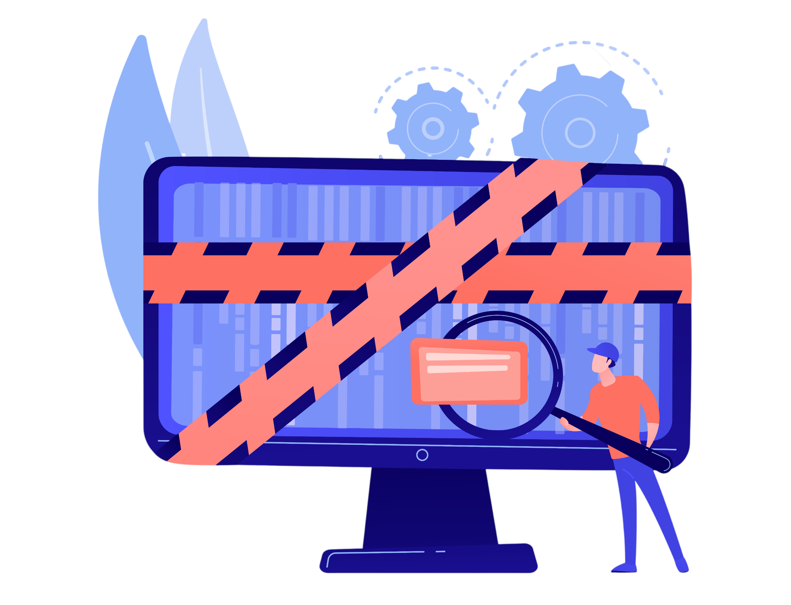
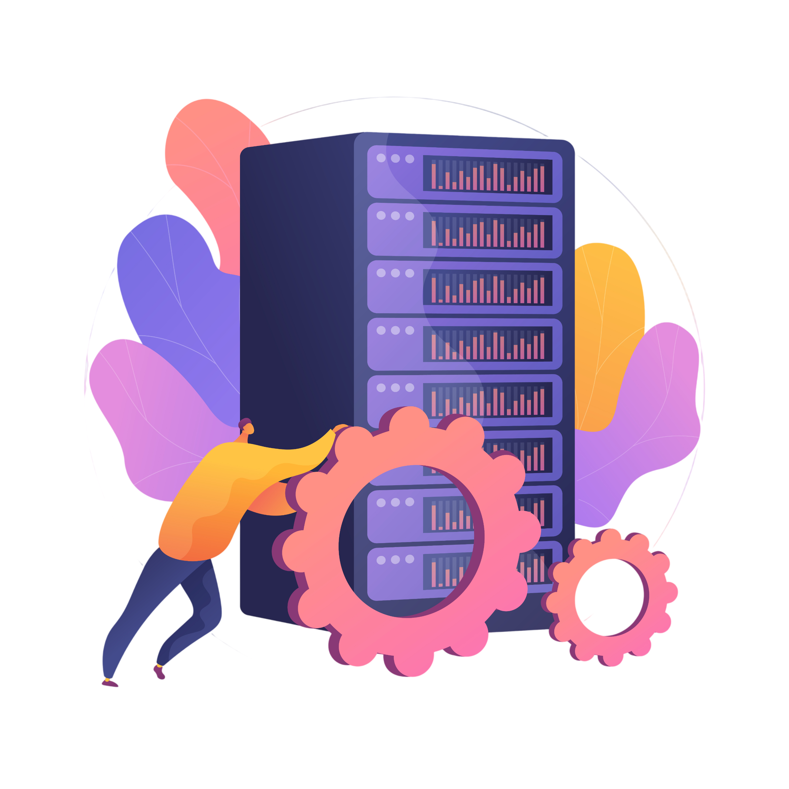

Référentiel RNCP
Gérer le patrimoine informatique
Répondre aux incidents et aux demandes d’assistance et d’évolution
Développer la présence en ligne de l’organisation
Travailler en mode projet
Mettre à disposition des utilisateurs un service informatique
Organisation
Projets
Projet 1 - Hackathon
Contexte général
Ce hackathon consiste à reproduire le fonctionnement d'une entreprise informatique afin de développer des compétences en support, gestion de services et travail en équipe. Les membres des équipes doivent organiser un projet, gérer des infrastructures et répondre à des incidents via un système de tickets. Chaque membre a un rôle précis (chef de projet, support, infra, marketing/dev) pour assurer le bon fonctionnement de l’équipe.
C1 – Recensement et identification des ressources numériques
→ Objectif : avoir une vision claire du SI
1. Recenser toutes les machines du réseau
2. Recensement des logiciels
3. Recensement des utilisateurs dans le réseau
C7 – Collecte, suivi et orientation des demandes

→ Objectif : gérer les demandes utilisateurs
Gestion de base de données

→ Développer la visibilité de l'entreprise
→ Déployer un service
→ Exploiter les données de l'entreprise
Gestion de base de données
→ Développer la visibilité de l'entreprise
→ Déployer un service
→ Exploiter les données de l'entreprise
Gestion de base de données
→ Développer la visibilité de l'entreprise
→ Déployer un service
→ Exploiter les données de l'entreprise